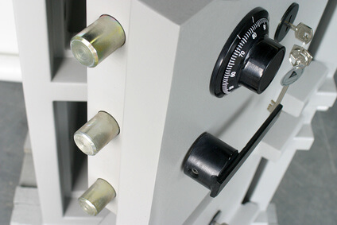

Immer wieder kommt es vor, dass wir Anrufe von verzweifelten Personen kriegen, die eine Tresoröffnung benötigen. So eine Tresoröffnung wird öfter benötigt als viele Menschen denken, denn es gibt viele Gründe für so einen Notfall.
Es kann zum Beispiel passieren, dass das Schloss seinen Dienst verweigert, dass Sie Ihren Code verlegt oder vergessen haben, oder – falls es ein Tresor mit Schlüssel ist – der Schlüssel abgebrochen ist, geklaut wurde oder Sie diesen verloren oder verlegt haben.
Seriöser Schlüsseldienst für die Tresoröffnung
 A.Aber Fair hat sich auf Öffnungen aller Art spezialisiert. Die Kunden genießen einen guten Service und können die Dienstleistung in allen Stadtteilen, sowie rund um die Uhr in Anspruch nehmen.
A.Aber Fair hat sich auf Öffnungen aller Art spezialisiert. Die Kunden genießen einen guten Service und können die Dienstleistung in allen Stadtteilen, sowie rund um die Uhr in Anspruch nehmen.
Als seriöser Anbieter in Wiesbaden helfen wir Ihnen, wenn Sie im Regen stehen und Ihren Hausschlüssel verloren, verlegt oder im Schloss abgebrochen haben.
Tresoröffnung in Wiesbaden: 24/7 Service
Am späten Abend oder in der Nacht, am Wochenende und an Feiertagen müssen Sie nicht auf die Öffnung des Tresors verzichten . Wir helfen Ihnen, mit Kompetenz und Professionalität, zu jeder Zeit und in allen Stadtteilen von Wiesbaden.
Haben Sie den Schlüssel für Ihren Safe verloren oder klemmt das Zahlenschloss und Sie können nicht auf den Inhalt Ihres Tresors zugreifen, ist dies dank der Dienstleistung kein Grund zur Verzweiflung.
Im 24h Dienst sind wir Ihr Spezialist und lassen Sie mit dem Problem des verlorenen oder abgebrochenen Schlüssels, sowie technischen Defekten bei klemmenden Zahlenschlössern nicht allein. Vertrauen Sie auf die Spezialisten und gehen bei einer gewünschten Öffnung kein Risiko ein.
Tresor- und Türöffnung ohne Beeschädigung
Eine große Sorge bei einer notwendigen Tresor- oder Türöffnung ist der optische und technische Zustand nach Erbringung der Dienstleistung. Der Schlüsseldienst arbeitet ausschließlich mit hochwertigem Präzisionswerkzeug und verfügt über die Erfahrung, die für eine professionelle Öffnung ohne Beschädigung notwendig ist.
Bei Tresoren und Türen öffnen die Profis alle Modelle und gewährleisten Ihnen, dass die Oberfläche unbeschädigt bleibt und mit keinem Merkmal darauf hinweist, dass Sie von einer Tresoröffnung Gebrauch gemacht haben.
Rufen Sie für Ihre Türöffnung für Wiesbaden an:
Falls Sie vorhaben sich einen neuen Tresor zuzulegen, gibt es tolle Ratgeber Artikel. Folgen Sie einfach dem Link für einen kompetenten Tresorratgeber.